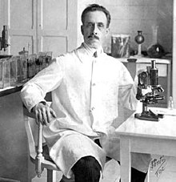
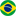
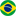

Dr. Carlos Justinino Ribeiro Chagas

In his lab at Oswaldo Cruz Foundation, Rio de Janeiro, Brazil
- Carlos Chagas was a Brazilian sanitary physician, scientist, and bacteriologist.
- He worked as a clinician and researcher.
- In 1909, he discovered the American trypanosomiasis, also known as the Chagas disease, while working at Oswaldo Cruz Institute.
- Chagas described in detail a previously unknown infectious disease, its pathogen, vector (Triatominae), host, clinical manifestations, and epidemiology.
- He was also the first to discover and illustrate the parasitic fungal genus Pneumocystis, later infamous for being linked to pneumocystis pneumonia in AIDS patients.
- He was twice nominated for the Nobel Prize in Physiology or Medicine (in 1913 and 1921), but he never received the award.
For more information about this great Brazilian scientist visit his Wiki page  .
.